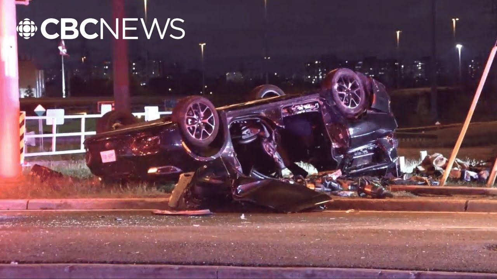

【多伦多车祸致三名儿童死亡，男子面临酒后驾驶指控】
Summary: Tragic news in southern Ontario as three children died in a Toronto collision allegedly caused by an impaired driver, with a 19-year-old suspect facing multiple charges.
摘要： 安大略省南部发生悲剧，多伦多一起车祸导致三名儿童死亡，据称由一名酒后驾驶者引发，一名19岁嫌疑人面临多项指控。

⏱️ Estimated Reading Time: 4 min
We are following tragic news in southern Ontario.
我们正在关注安大略省南部的悲剧新闻。
Three children are dead after an overnight collision in the west end of Toronto.
多伦多西区发生一起夜间碰撞事故，三名儿童死亡。
Police allege an impaired driver caused the crash.
警方称，一名酒后驾驶者导致了这起车祸。
CBC's Mark Harkol has the details.
CBC的马克·哈科尔将带来详细报道。
This incident occurred just after 12:30 a.m. in the west end of Toronto, an area known as Atobico.
这起事件发生在凌晨12:30后不久，地点是多伦多西区一个名为Atobico的地区。
Uh if you're familiar with the city, it happened near Pearson International Airport just off Highway 401.
如果你熟悉这座城市，事发地点靠近皮尔逊国际机场，就在401号高速公路旁。
What police allege occurred is that someone driving a Dodge Caravan was speeding off the off-ramp from the eastbound 401 onto Renfort Drive.
警方称，一辆道奇Caravan从东行401号高速公路的出口匝道超速驶入Renfort Drive。
You saw it on a map there.
你可以在那里的地图上看到。
That is where a family or uh largely a family, but six people in a minivan, police say, were waiting at a red light.
警方称，一辆小型货车中的六人（主要是一个家庭）正在那里等红灯。
Inside that vehicle, four children and two adults.
车内共有四名儿童和两名成人。
The the woman uh in the in the vehicle said to be a mother.
车内的女性据称是一位母亲。
After that, they say tragedy completely unfolded from there.
之后，悲剧彻底从那里展开。
The speeding Dodge caravan, according to police, lost control, jumped over the median, and slammed headon into the minivan that those six people were in.
据警方称，超速的道奇Caravan失控后越过中央隔离带，迎面撞上了载有六人的小型货车。
Acting inspector Bah Serbanand lays out the devastation.
代理督察Bah Serbanand描述了这场灾难。
It's alleged the Dodge caravan was traveling at a high rate of speed, lost control, went over the uh race median, collided with the minivan, that was stopped.
据称，道奇Caravan高速行驶时失控，越过中央隔离带，撞上了停着的小型货车。
Unfortunately, on scene, two of the children, 15-year-old and a 13-year-old, was pronounced deceased on scene.
不幸的是，现场两名儿童（一名15岁和一名13岁）被宣布当场死亡。
The third child was transported to a nearby trauma center and pronounced deceased at the hospital.
第三名儿童被送往附近的创伤中心，并在医院宣布死亡。
Police say that third child is a six-year-old girl.
警方称，第三名儿童是一名六岁女孩。
Now, there was another child, a 10-year-old, as well as two adults that were taken to hospital.
此外，还有一名10岁儿童和两名成人被送往医院。
They've survived, but they've suffered serious injuries, though they are non-lifethreatening.
他们幸存下来，但伤势严重，不过没有生命危险。
CBC News has obtained video of an arrest made at the scene and Toronto police tell CBC that they have arrested 19-year-old Ethan Leah of Georgetown.
CBC新闻获得了现场逮捕的视频，多伦多警方告诉CBC，他们逮捕了来自乔治敦的19岁男子Ethan Leah。
They say that arrest was made at the scene.
他们称逮捕是在现场进行的。
He faces a slew of charges including three counts of impaired operation of a motor vehicle causing death and three counts of dangerous driving causing death.
他面临多项指控，包括三项酒后驾驶致人死亡和三项危险驾驶致人死亡。
Police are asking anyone who was in the area overnight uh who may have dash cam footage of the Dodge Caravan that they allege Luier was driving uh shortly before the collision to contact them.
警方呼吁当晚在该地区的任何人，如果可能拥有据称是Luier驾驶的道奇Caravan在碰撞前不久的行车记录仪画面，请与他们联系。
Anyone who has any information that can help them out in their investigation to let them know.
任何有信息可以帮助调查的人请告知警方。
19-year-old Ethan Laouay from Georgetown was expected to make an appearance in bail court sometime this morning.
来自乔治敦的19岁男子Ethan Laouay预计今早会在保释法庭出庭。
We don't have the results of that yet and it's not quite clear if he's actually made his appearance yet or if it's been delayed, but we'll keep you updated on this through the day.
我们尚未得知结果，也不清楚他是否已经出庭或被推迟，但我们将全天为您更新。
Natasha, CBC's Mark Carassol reporting.
娜塔莎，CBC的马克·卡拉索尔报道。
[Music]
[音乐]